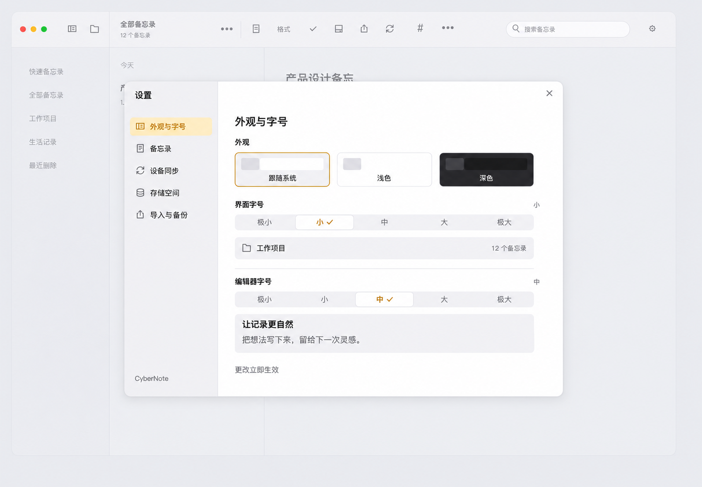
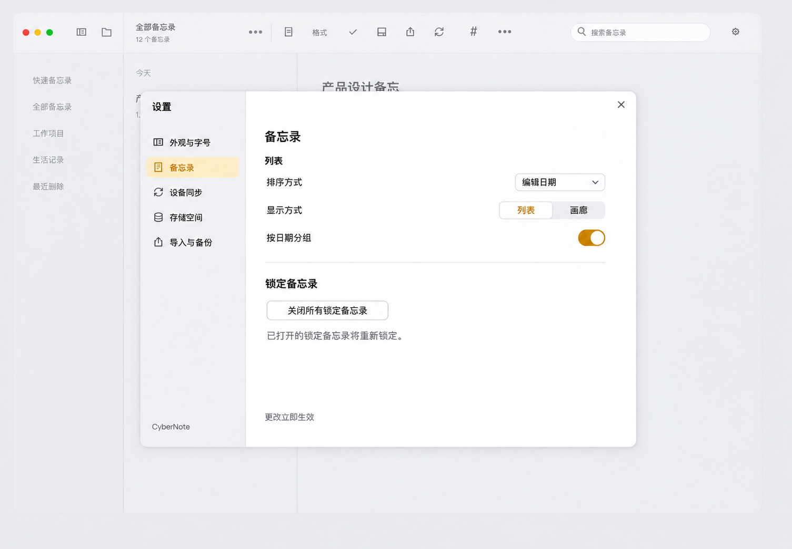
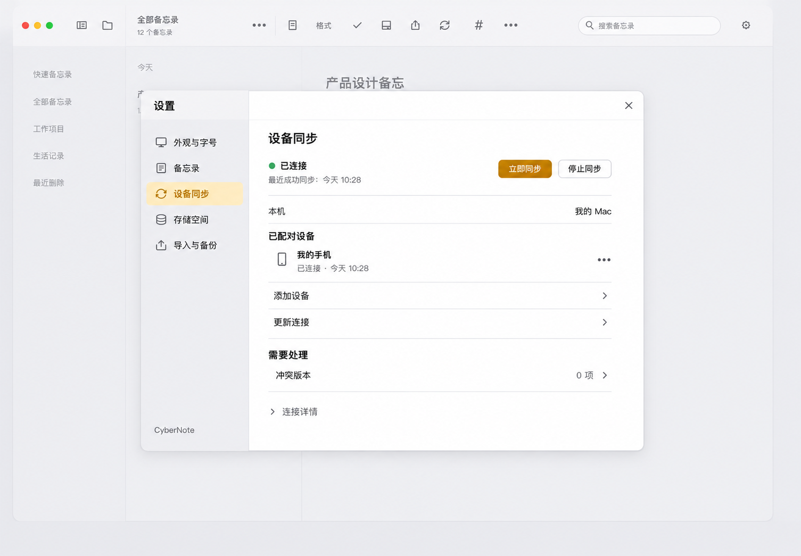
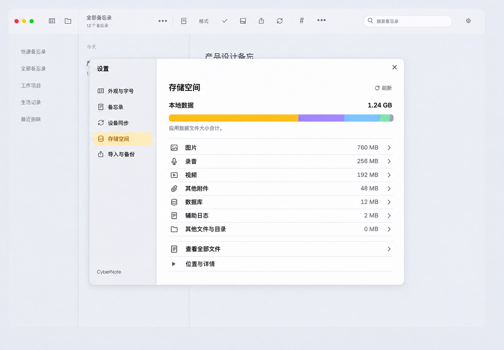
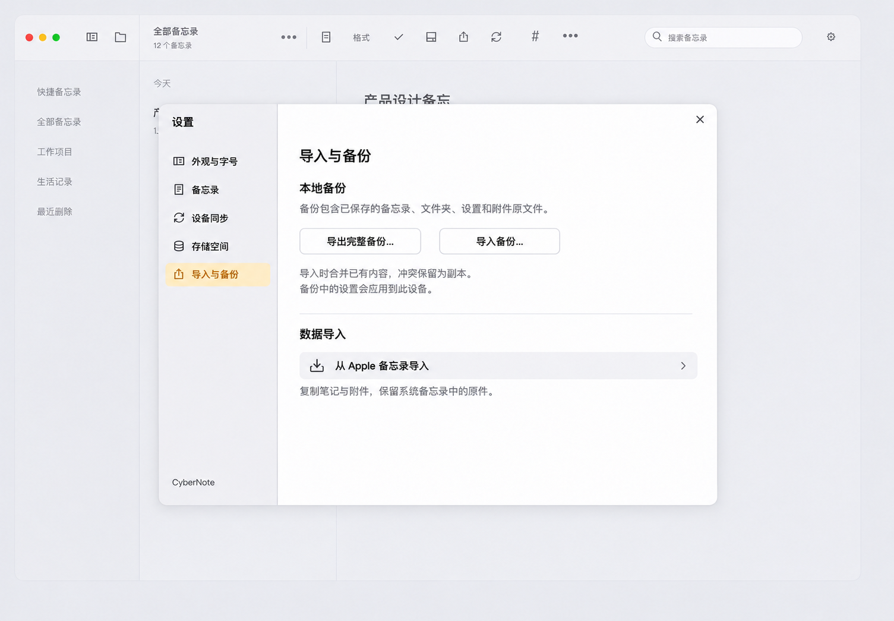
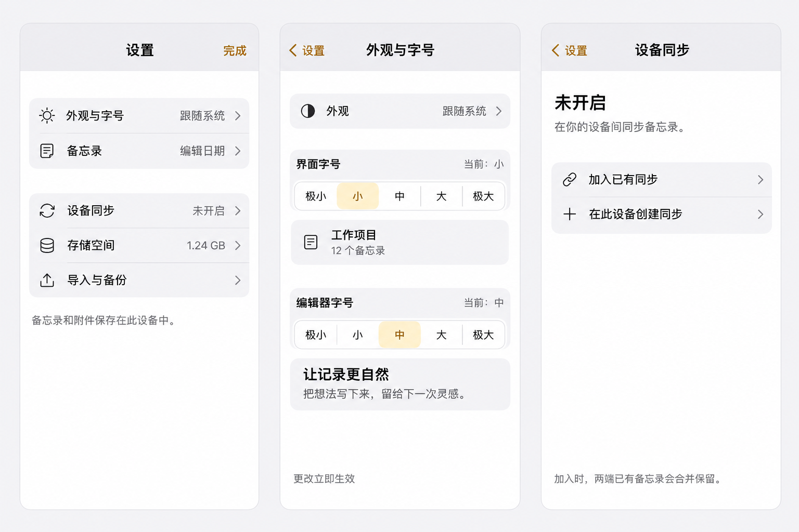

CyberNote 设置设计稿
桌面五分类 / 移动三屏流程。使用 imagegen CLI 生成并经人工审阅；示意内容，尚未实现。
桌面 · 外观与字号
三种外观与两组独立字号预览。 查看原图

桌面 · 备忘录
列表偏好与锁定备忘录操作。 查看原图

桌面 · 设备同步
连接状态、设备与常用操作，技术字段按需展开。 查看原图

桌面 · 存储空间
应用文件分类占比与文件入口。 查看原图

桌面 · 导入与备份
完整备份和 Apple 备忘录导入。 查看原图

移动 · 首页与子页
设置首页、外观与字号、未开启同步三个屏幕。 查看原图
